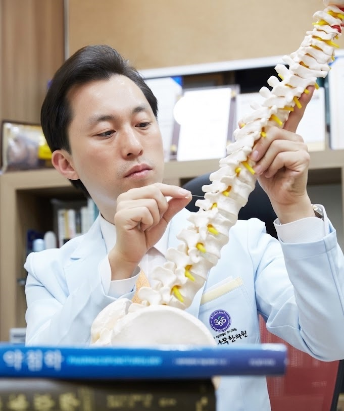

김성수 원장
01침구의학과 전문의 · 경희대학교 동서의학박사(최우수논문상)
학력·경력 자세히 보기 ↗동탄에서 이어온 척추·관절 진료
목과 허리, 어깨와 무릎까지.
척추·관절 통증을 중심으로 환자의 상태를 살피고
추나와 약침 등 필요한 진료를 함께 고민합니다.

해나무가 진료를 시작하는 방법
통증의 위치와 양상, 생활 속 불편함을 충분히 듣고 환자별 상태에 맞는 진료 방향을 설명합니다. 진료의 중심에는 언제나 환자의 일상이 있습니다.
불편한 부위를 중심으로 진료 정보를 확인해 보세요. 각 증상의 원인과 치료 방향은 진찰 결과에 따라 달라질 수 있습니다.
의료진의 전문 분야와 공개된 주요 경력을 확인하세요. 예약 전 진료 일정도 함께 확인해 주세요.
침구의학과 전문의 · 경희대학교 동서의학박사(최우수논문상)
학력·경력 자세히 보기 ↗
원광대학교 한의과대학 졸업 · 미국 의사 인증 및 진흥협회(APCA) 관련 자격 기재
학력·경력 자세히 보기 ↗침구의학과 전문의 · 한의학 석사
학력·경력 자세히 보기 ↗필요한 진료를 한곳에서 확인하실 수 있도록 진료 분야를 간결하게 안내합니다.

기본 진료 요일과 임시 변경사항을 안내합니다. 월별 일정은 별도 데이터 파일에서 관리하며, 방문 전 반드시 최신 예약 가능 여부를 확인해 주세요.
진료 일정 정보를 불러오는 중입니다. 기본 요일은 오른쪽 표를 확인해 주세요.
| 월 | 화 | 수 | 목 | 금 | 토 | 일 |
|---|---|---|---|---|---|---|
| 김성수 | 박세운 | 김성수 최영재 | 최영재 | 김성수 | 김성수 | 최영재 |
기본 진료 요일은 예외 일정 및 공휴일에 따라 변경될 수 있습니다.
월별 일정표를 불러오는 중입니다.
경기도 화성시 동탄솔빛로 47, 2층
나루마을 새마을금고 옆 · 031-8003-3653
건물 지하 주차장: 진료시간 동안 주차 지원(데스크에 차량번호 말씀해 주세요)
건물 뒤 공영주차장: 기존 안내 기준 1시간 30분 무료
※ 주차 지원 조건은 변동될 수 있으므로 방문 전 확인해 주세요.
평일·토요일 점심시간 13:00–14:00 / 일요일·공휴일 점심시간 없음
접수는 진료 마감 30분 전 종료

방문 전 기본 정보를 한 페이지에서 확인할 수 있도록 정리했습니다.
기본 진료시간은 일요일·공휴일 09:30–15:00이며 점심시간이 없습니다. 임시 휴진이나 일정 변경이 있을 수 있으므로 방문 전 확인해 주세요.
목·허리·관절의 불편함 등 여러 증상으로 상담할 수 있습니다. 시술 여부는 진찰 결과와 개인별 건강 상태에 따라 결정합니다.
네이버 예약 또는 전화로 문의할 수 있으며, 건물 주차장 및 인근 공영주차장을 이용할 수 있습니다. 최신 주차 지원 조건은 한의원에 확인해 주세요.